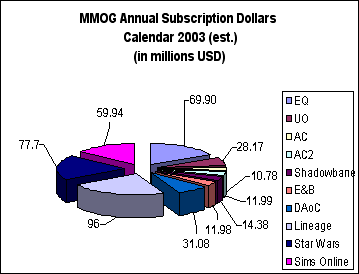

Biting The Hand #27: Biting The Hand #27:
Happy 5th Birthday, BTH
by Jessica Mulligan
June 11, 2002
This week’s column represents the start of the sixth year of Biting the Hand. I suppose mid-April was actually the anniversary, calendar-wise, as the first BTH appeared in April of 1997. However, there were a few weeks of downtime between when Happy Puppy cut loose all it’s freelancers in April of 2001 and when Skotos picked up the column in May of 2001, along with a couple dropped columns, so I moved the anniversary date.
This also represents the first anniversary of the column appearing on Skotos. When I look at the other columns and articles here, I almost become impressed with myself for being in such august and learned company. Skotos is putting together one heck of a database of information on creating online games and telling stories. Next to some of them, I’m just a ranting, jaded yahoo. Kinda sobering, in a way.
I still find it a bit hard to believe that this column has lasted long enough to move into a sixth year; one would think I’d have run out of things to say about online gaming years ago (and some would no doubt claim I did). In fact, I intended to write the column for a couple years to say what I had to say, then move on to other things. Somehow, something more to say always pops up, which probably just means I’m a wordy, self-important wonk who likes seeing her own words in print. Hey, if it works…
To help celebrate the column’s longevity, over the coming year I’m going to occasionally reprint some of my favorite past columns, tacked on to the end of regular, original columns. There will be comments included with these reprints, telling the story being the column. This time, the reprint is Jack and the Beancounter, one of the first BTH columns and still my all-time favorite. It still seems relevant to me; your mileage may vary.
Anyway, let’s tie up some loose ends.
Preaching to the Choir
Some regular readers have been complaining that I’m preaching a lot about non-game related issues. The biggest culprit seems to be references to gun control, i.e. my opposition to it. Hey, I’m a crotchety old broad, give me some leeway here, <g>.
OK, message received: I’ll tone down the preaching on non-game issues. Unless I get really riled up about something, then all bets are off. God help you all if pantyhose prices rise significantly.
Subscription Gaming Revenues to Explode?
(Warning: Shameless self-exploitation alert!)
I’ve spent quite a bit of the past three months working on The Themis Report with other Themis folks and ace designer and author Greg Costikyan. The company will be publishing the report this month, in conjunction with DFC Intelligence’s annual Online Games report. During the process, we spent quite a bit of time trying to figure out just how much money major subscription games will bring in during 2003, after The Sims! Online, Shadowbane, Earth and Beyond, Asheron’s Call 2 and Star Wars Galaxies launch later this year. The answer rather shocked us: It could easily be over $400 million. Check out Figure 1, which I grabbed right from the report:
Figure : Subscription Revenue Potential Estimates, Major Persistent Worlds, Calendar 2003.
|  |
These are just kitchen estimates of the gross revenue and don’t take into account promotions, free trial months, expenses, etc.. The take-away here is that if all these game perform at even medium levels, the gross revenue next year will be about twice what it is this year, 2002. Wow. We could finally be coming in to our own as an industry.
Of course, what we don’t know, and won’t know until sometime next year, is whether all these offerings will start cannibalizing subscribers from each other. That has not been the case to date, but there are still relatively few games to choose from. Going from five major offerings to ten may change that equation, but we just won’t know until it happens.
We’re all rooting for success and hoping like mad that publishers carefully observed Mythic’s explosive success with Dark Age of Camelot, understand why they have succeeded so brilliantly and copy those factors into their own launches. If 2003 goes as planned, it means that more publishers and others with money will actually be willing to spend it on producing more persistent worlds.
And that can only be good for all of us, players and developers alike.
E3 Wrap-Up: Asheron’s Call 2 and Shadowbane
Asheron’s Call 2
This game is so much more functional and beautiful than the original Asheron’s Call, the difference is stunning. The production values are keen, to say the least; watching the grass on a plain waft softly in the wind, or diving into a lake and swimming past the schools of fish adds more to the experience than you can imagine. The graphics and player interface have been improved quite a bit, as well. Frankly, Microsoft and Turbine should have billed the game as its own world and avoided ‘sequelitis;’ the difference between AC1 and AC2 is that dramatic. The game also played fairly well for being in a Beta phase; one assumes that starting with a mature code base (AC1) helped with stability.
I was not the only ‘pro’ checking out the game. When I first arrived at the Microsoft booth to give it a whirl, I had to stand in line for a while because members of the Ultima Online and Shadowbane development teams were monopolizing the booth stations. This is called “competitive intelligence.” The guys from UO seemed happy with what they saw; the guys from Shadowbane walked away with thoughtful looks on their faces.
What is unknown is whether the game is unique enough to grab a larger audience than did AC1. My initial impression is that the game is solidly built and should launch without major technical problems; game play impressions will have to wait until I can mess around in open Beta. It seems to be there, but ten minutes at a convention terminal isn’t a fair evaluation.
Shadowbane
And speaking of Shadowbane, I also dropped by the Ubisoft booth to watch development team members give demos of the game play. I wanted to get hands-on, but the unwashed masses were not allowed to touch the holy shrine, so I was forced to watch whatever interested the demo person at the time.
Overall, the game looks and acts pretty much like you’d expect a pre-Beta game written from scratch to look and act. There were some fits and starts and a few rubber-band latency problems that optimizing the code should help solve. The features I most wanted to see, the player city-building and management routines, weren’t shown, except as functions of a city under siege. That looked pretty interesting, what with walls being busted open by siege engines and the like.
I see the city building and management elements of Shadowbane as the place where Wolfpack has a real chance to shine with the game. No other persistent world game currently has such ambitious plans for allowing players to create and defend actual living spaces within the game, and this is something players have been requesting for a long while. Ultima Online currently comes closest to it with player-owned housing and vendors that can be loosely and informally grouped together. Shadowbane plans to kick that up a notch by letting players construct and manage actual cities.
In terms of game-play, again, we’ll have to wait for the open Beta sometime this summer; it is impossible to tell how well that has been done from watching a demo.
Jack and The Beancounter
A Fable For The Computer Age
Note: This column was originally published in mid-1998 on the old GameBytes website. It was republished on Happy Puppy in March of 1999. See the post-mortem following the column.
Once upon a time, there was a young developer named Jack.
Jack produced 3D action shooters. Being a pious young developer, Jack naturally worshipped the great god Creativity. That deity smiled on Jack for his piousness, bestowing on him the rare attributes of Great Design, Elegant Code and Fast Programming. Jack’s games were fun and delivered on time to the consumer, and everyone agreed that his shooters were the best.
Jack’s games were so good, in fact, they moved off the retail shelves like free cheese at a government handout. The company he worked for became very big and wealthy, with many employees. The company executives, most of whom hadn’t the talent to be developers and resented Jack because of it, became very rich, while Jack continued to slave away on his beloved games for mere wages. Oh, and the occasional free pizza and can of Jolt.
Jack was an unassuming young man, however, who liked games and loved the idea that many people would play his games. He thought that was very cool. He was happy making games people enjoyed playing. So because he loved games and the people who played them so much, he continued to work for far less than the senior executives, who didn’t really contribute much to the games, although they told the world they did.
And lo! the world believed them, because the executives controlled the mighty demon Press Release, an evil being that could seduce ignorant, lazy journalists into believing anything. The journalists constantly reprinted verbatim what Press Release said of the executives, and Jack, who did the real thinking, lived on unknown and unsung.
After a while, the demon could even make the executives believe they were great, though they knew better. Like most executives, they weren’t evil, just stupid, greedy and full of themselves. Much like politicians, in fact, but that’s another story.
The executives began to believe they were great men and women of unsurpassed business ability, responsible for the company’s rise to power in the industry. They began to send email to Jack, telling him that several hundred new features must be in his game. They awarded themselves stock options and large salaries and bonuses. They spoke at conventions and seminars, telling their associates from other companies how they made the company a powerhouse. They gave interviews to journalists, attributing to themselves the mystic skills of Power of Distribution, Excellent Negotiator and Great Sense Of Where The Market Is Going. They were flying high in hog heaven and looked forward to retiring as respected – and incredibly rich – members of the industry.
That’s when the megagod Reality showed up.
As everyone except executives know, Reality is a capricious but easily seen god. That’s why he normally picks on executives; they’ve been blinded by their own light and are easy targets. Reality gazed on the market and saw that it was bad. He mused to himself, “Well, if everyone likes Jack’s games, they’ll like even more of them.” So, with a sly grin and a sense of the absurd, he went about inspiring the company’s competitors to flatter by imitation. Soon, there were dozens of games on the retail shelves that were just like Jack’s games. Development of other types of games slowed to a near-halt. Sales at Jack’s company began to fall off. A lot. Like, by nearly 50%. Ouch.
The executives became worried, but not too much. After all, the demon Press Release was still under their control and journalists were still lazy and ignorant. No one had to know just how bad things were. In the meantime, the executives prayed to the deity Great Deal in hopes for a windfall and read the front page of the Wall Street Journal.
But Great Deal took an extended vacation that season and sales continued to fall. Yet the executives still weren’t too worried, because Jack would save them with his next game, due Real Soon Now for the Christmas selling season. Jack would save the company yet one more time, then the executives would sell their options and get the hell out before things fell apart.
When September rolled around, however, there was no new game from Jack. “Hey, it’s taking longer than I thought,” shrugged Jack.
“But we bought the shelf space!” cried the executives. “We already shipped the end caps and bought the advertising for the Christmas selling season! We issued preliminary numbers for the 4th quarter! Our stockholders will sue the crap out of us!”
“Hey, Creativity doesn’t work on a deadline and you ordered me to put hundreds of new features in the game,” said Jack calmly. “You can have it in January. Maybe February. April, for sure. Guaranteed, no later than June. Or July. You can never be sure.”
That’s when the interesting god Panic showed up.
It struck the hearts of the executives with major fear, and they cowered behind their desks, saying, “All is lost and, if something isn’t done, everyone will see us for what we really are! We have to sell the company to Microsoft at an inflated, outrageous price!”
But Microsoft, which was already a deity in its own mind, had its own problems with the occasional god Justice and couldn’t be bothered right then. So the executives approached everyone they could think of, but no one wanted to buy the company. “We’ll wait for the fire sale,” they all said, showing their teeth and laughing.
Panic whispered in the ears of the executives again, saying, “Only that most fearsome demigod, Beancounter, can save you now!” And so the executives prayed to Beancounter, who showed up immediately on a plane from Cambridge, Mass. Riding in coach, of course, having refused to pay $4 for a headset to watch the in-flight movie, which starred his wife.
Beancounter immediately took control of the company from the Panicked executives, saying to them, “Worry not. Your jobs and perqs are safe, because you prayed sincerely to me. Everyone else around here is in for a surprise, however.” And so Beancounter drew his sword and began slashing.
The first thing to go was free Jolt and pizza for the developers. This was followed quickly by a new set of policies and procedures designed to make it impossible to buy anything more expensive than a postage stamp, and then only after weeks of delay and dozens of forms to be filled out. Then, faster than you can say “Low margins on SKUs,” Beancounter sliced up Human Resources, Finance and Marketing. When he was done, half the company had been fired and the rest were scared to death. The vital god Morale was nowhere to be found. The executives breathed a sigh of relief and continued reading the Wall Street Journal.
Then Beancounter set his sights on Development.
After nosing around the department for several days, Beancounter slid into Jack’s office one morning, plastered an evil smile on his face and said, “I’m afraid we’re going to have to let go a few of your people.”
“That’s not very realistic,” said Jack, not looking up from his monitor, “if you want this game finished sometime this incarnation.”
“I don’t have to be realistic,” said Beancounter gleefully. “I’m an MBA. Reality has nothing to do with my job description.”
“It ought to,” replied Jack, still coding merrily away. “These people create the games that pay your salary.”
“I am perfectly aware of that,” smiled Beancounter. “That’s why we have to fire half of them. It makes perfect sense, if you look at it from my point of view.”
Jack turned to look at Beancounter. “If you fire even one of my people,” he said grimly, “you’ll really, really not like what happens.”
“Nevertheless,” replied Beancounter triumphantly, “half of them are fired. You pick them, and then tell them before lunch. And don’t forget to inform HR before the end of the day,” he chortled, returning to his corner office.
When Beancounter arrived at the office the next day, he found the executives all huddled in his office, quaking in terror. “What’s wrong this time?” he asked impatiently.
“Jack resigned!” they cried in unison. “And he took his team with him!”
“But, but, but…” spluttered Beancounter, “where can they go? The job market around here sucks!”
“Our competitors gave them millions in funding to set up a new company and develop a Jack Game for them!” they wailed. “All is lost!”
“You’re right,” said Beancounter. “Prepare to worship Bankruptcy and Receivership.” And he immediately called up his old college roommate and got a job at AT&T at a higher salary for less responsibility.
The Moral: In the Game Business, if you worship the wrong gods, you’re going to get Jacked around.
Post Mortem: The column is almost Jacked
As I found out later, Happy Puppy almost didn’t publish this one.
The column was written at a time when ever-more developers were leaving inhouse employment to start their own small development shops, usually with money from a publisher that competed with their former employer. When I talked to some of them about it, they all confirmed they’d gotten tired of being jacked around by stupid, know-nothing senior executives who set unrealistic development schedules and were more concerned with stock options than quality. And they were tired of not sharing in the stock or financial success of the games they developed. In a nutshell, they were tired of being treated like interchangeable parts in a money-printing machine. I thought it was time to say something about that, as a warning to the industry about fairness and treating your people well.
My editor, Charles Gray, worried that it was too raw and insulting to industry decision-makers, even for a column noted for such things. He wanted to publish it; he just wasn’t sure if he should. It wasn’t a case of “We might lose advertising banners for the site;” it was more a case of, will every developer and executive in the industry be mortally offended and stop reading the column? Or will executives demand that employees not read it on company time and prohibit them from giving interviews and articles to the site?
This is not something a serious game information site can tolerate. Executives and developers provide interesting articles and interviews that the readers love to read, and they do it for free. If they don’t like you, those interesting articles and interviews stop, you lose content and the competition gets a step up on you.
So Charles walked it into the Publisher’s office and asked what she thought about it, to which she replied, “Well, it’s called ‘Biting the Hand’ for a reason, isn’t it?”
Damn straight it is.
|
Recent Discussions on Biting the Hand:
|
|
|
  |
The Game Developer's Conference
|